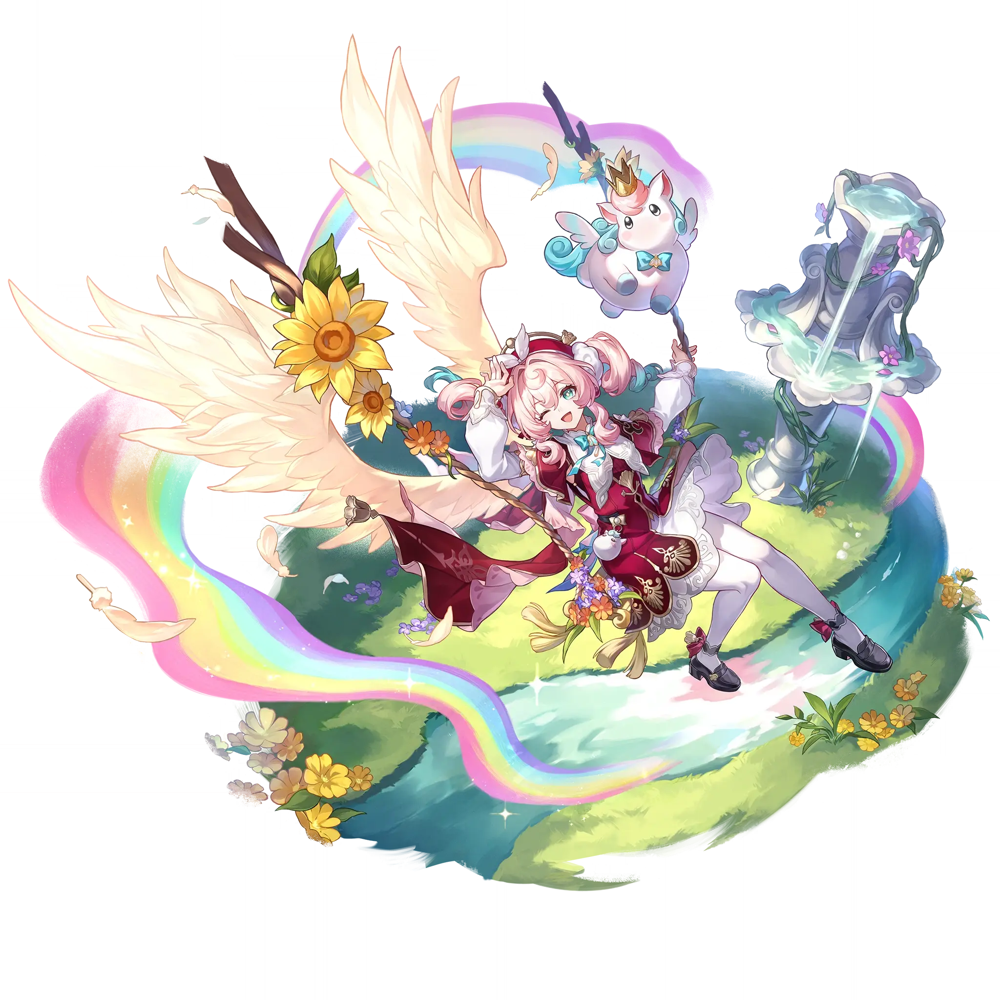

Hyacine
Best Hyacine build guide for Honkai Star Rail. See Hyacine's best Relics, Light Cones, teams, Eidolons, Trace priority, and how to play Hyacine.
🔍 Detail Skill
Semua skill aktif dan pasif beserta efeknya.
Deals Wind DMG equal to #1[i]% of Hyacine's Max HP to one designated enemy.
Summons memosprite Little Ica, restores HP equal to #1[i]% of Hyacine's Max HP plus #2[i] for all allies aside from Little Ica, and restores HP equal to #3[i]% of Hyacine's Max HP plus #4[i] for Little Ica.
The memosprite Little Ica initially has Max HP equal to 50% of Hyacine's Max HP. When Hyacine or Little Ica provides healing, increases Little Ica's DMG dealt by #1[i]% for 2 turn(s). Stacks up to 3 time(s).
Deals Wind DMG to all enemies equal to #1[i]% of the tally of healing done by Hyacine and Little Ica in the current battle, and clears 50% of the tally of healing.
Little Ica's SPD remains at 0, is immune to debuffs, and they will not appear on the Action Order. If ally targets (except Little Ica) have their HP reduced, then Little Ica will consume HP equal to 4% of their own Max HP and restore HP equal to #1[i]% of Hyacine's Max HP plus #2[i] for the ally target with reduced HP at the start of any target's turn or after any target takes action. While Hyacin
When summoned, additionally regenerates 15 Energy for Hyacine. When first summoned, additionally regenerates 30 Energy.
⚔ Light Cone Terbaik
Diurutkan dari yang paling kuat. Persentase menunjukkan performa relatif terhadap pilihan terbaik.
💎 Relic Set Terbaik
Set terbaik untuk karakter ini, diurutkan berdasarkan prioritas.
📊 Stat Utama
Stat yang dicari pada tiap slot.
👥 Tim yang Direkomendasikan
Karakter yang sering dipasangkan bersama Hyacine.
 Castorice
Castorice
 March 7th • Evernight
March 7th • Evernight
 Mortenax Blade
Mortenax Blade
 Blade
Blade
 The Herta
The Herta
 Feixiao
Feixiao
🔗 Lanjutkan
Build ini dirangkum dari Prydwen Institute. Starwise tidak menghitung sendiri. Angka bisa berubah setelah patch atau karakter baru rilis.